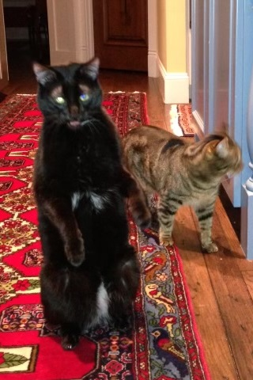

Gopher Cat
I think the picture speaks for itself. The cat in the picture who is acting like an actual cat is "Sweet Pea". She finds Boo's behavior ridiculous. She wishes her mom would stop taking his picture - it just encourages him.
